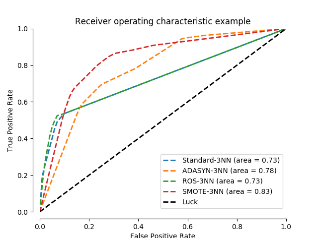

Benchmark over-sampling methods in a face recognition task¶
In this face recognition example two faces are used from the LFW (Faces in the Wild) dataset. Several implemented over-sampling methods are used in conjunction with a 3NN classifier in order to examine the improvement of the classifier’s output quality by using an over-sampler.
# Authors: Christos Aridas
# Guillaume Lemaitre <g.lemaitre58@gmail.com>
# License: MIT
import matplotlib.pyplot as plt
import numpy as np
from scipy import interp
from sklearn import datasets, neighbors
from sklearn.metrics import auc, roc_curve
from sklearn.model_selection import StratifiedKFold
from imblearn.over_sampling import ADASYN, SMOTE, RandomOverSampler
from imblearn.pipeline import make_pipeline
print(__doc__)
LW = 2
RANDOM_STATE = 42
class DummySampler(object):
def sample(self, X, y):
return X, y
def fit(self, X, y):
return self
def fit_sample(self, X, y):
return self.sample(X, y)
cv = StratifiedKFold(n_splits=3)
# Load the dataset
data = datasets.fetch_lfw_people()
majority_person = 1871 # 530 photos of George W Bush
minority_person = 531 # 29 photos of Bill Clinton
majority_idxs = np.flatnonzero(data.target == majority_person)
minority_idxs = np.flatnonzero(data.target == minority_person)
idxs = np.hstack((majority_idxs, minority_idxs))
X = data.data[idxs]
y = data.target[idxs]
y[y == majority_person] = 0
y[y == minority_person] = 1
classifier = ['3NN', neighbors.KNeighborsClassifier(3)]
samplers = [
['Standard', DummySampler()],
['ADASYN', ADASYN(random_state=RANDOM_STATE)],
['ROS', RandomOverSampler(random_state=RANDOM_STATE)],
['SMOTE', SMOTE(random_state=RANDOM_STATE)],
]
pipelines = [
['{}-{}'.format(sampler[0], classifier[0]),
make_pipeline(sampler[1], classifier[1])]
for sampler in samplers
]
fig = plt.figure()
ax = fig.add_subplot(1, 1, 1)
for name, pipeline in pipelines:
mean_tpr = 0.0
mean_fpr = np.linspace(0, 1, 100)
for train, test in cv.split(X, y):
probas_ = pipeline.fit(X[train], y[train]).predict_proba(X[test])
fpr, tpr, thresholds = roc_curve(y[test], probas_[:, 1])
mean_tpr += interp(mean_fpr, fpr, tpr)
mean_tpr[0] = 0.0
roc_auc = auc(fpr, tpr)
mean_tpr /= cv.get_n_splits(X, y)
mean_tpr[-1] = 1.0
mean_auc = auc(mean_fpr, mean_tpr)
plt.plot(mean_fpr, mean_tpr, linestyle='--',
label='{} (area = %0.2f)'.format(name) % mean_auc, lw=LW)
plt.plot([0, 1], [0, 1], linestyle='--', lw=LW, color='k',
label='Luck')
# make nice plotting
ax.spines['top'].set_visible(False)
ax.spines['right'].set_visible(False)
ax.get_xaxis().tick_bottom()
ax.get_yaxis().tick_left()
ax.spines['left'].set_position(('outward', 10))
ax.spines['bottom'].set_position(('outward', 10))
plt.xlim([0, 1])
plt.ylim([0, 1])
plt.xlabel('False Positive Rate')
plt.ylabel('True Positive Rate')
plt.title('Receiver operating characteristic example')
plt.legend(loc="lower right")
plt.show()
Total running time of the script: ( 1 minutes 29.605 seconds)